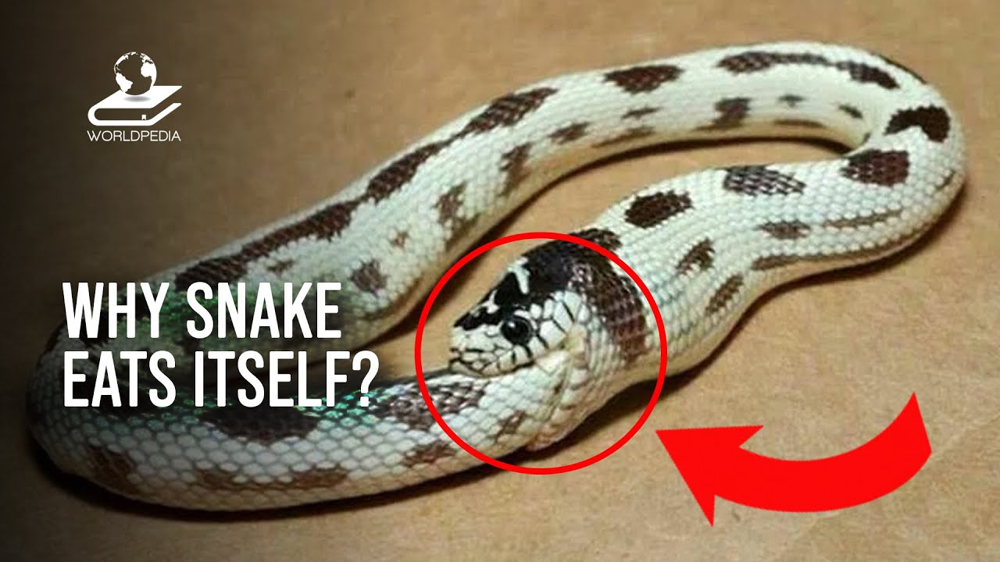
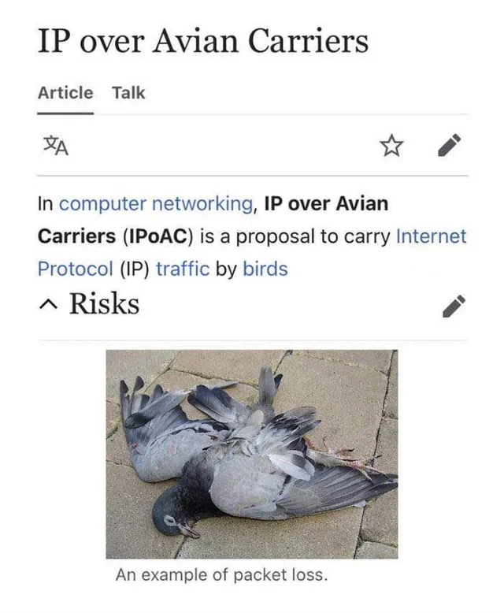
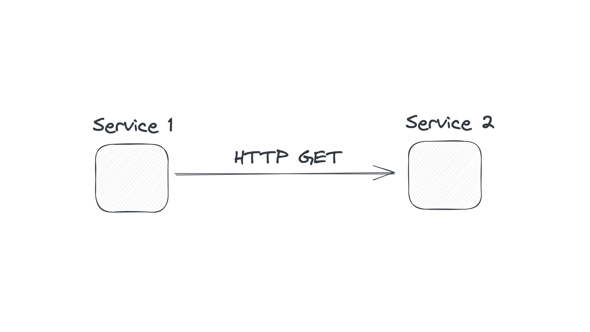
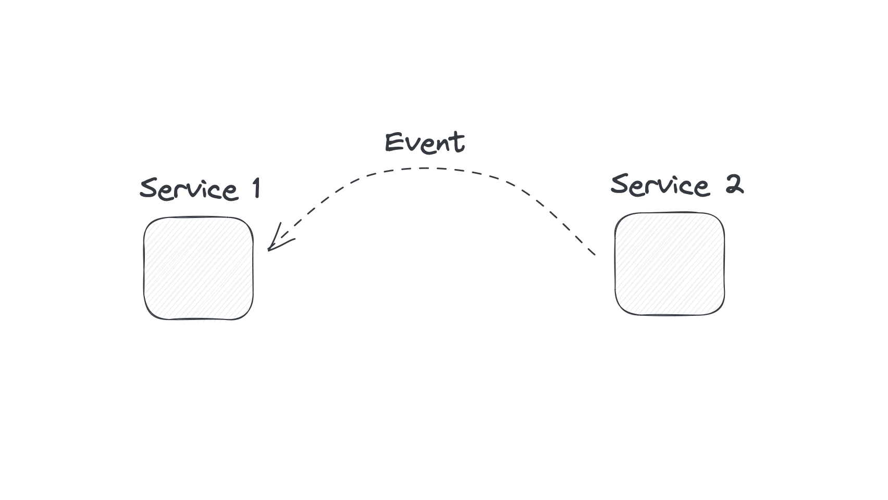
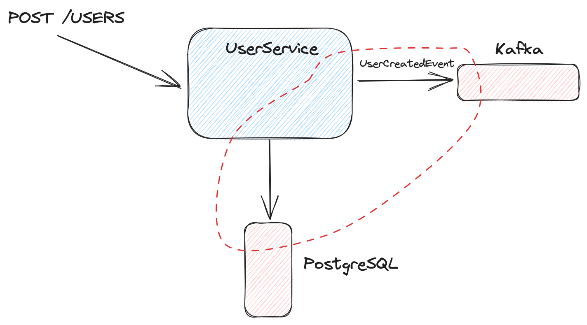
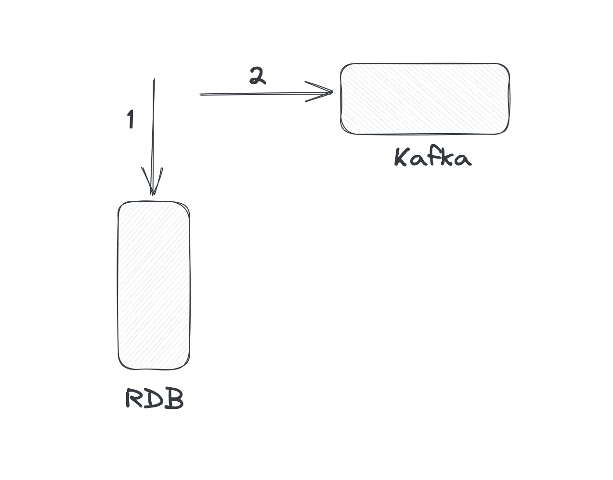
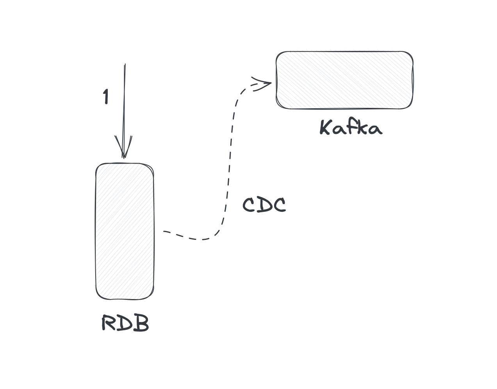
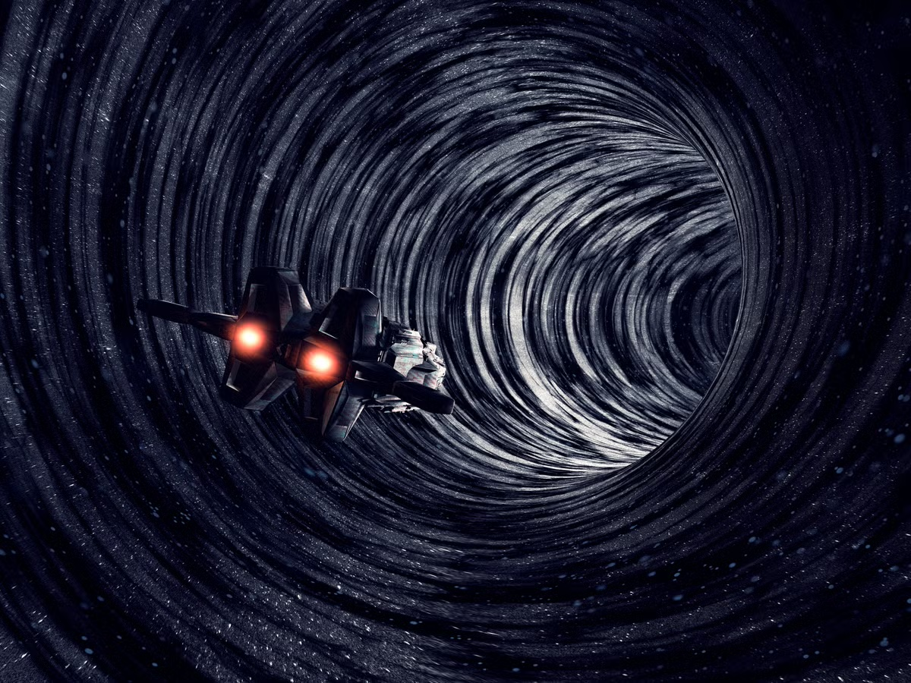

Dancing with Uncertainty
Challenges of Distributed Systems
Grzegorz Piwowarek
{ 4comprehension.com }
Java Champion | Oracle ACE
@pivovarit

What makes systems...distributed?
distributed systems are systems that communicate over unreliable channels
Network is unreliable
as of 2026 https://slate.com/technology/2014/08/shark-attacks-threaten-google-s-undersea-internet-cables-video.html
https://slate.com/technology/2014/08/shark-attacks-threaten-google-s-undersea-internet-cables-video.html

https://en.wikipedia.org/wiki/IP_over_Avian_Carriers
CAP Theorem
- Consistency
every read receives the most recent write (a single-copy illusion) - Availability
every request receives a non-error response (even if some nodes are down) - Partition tolerance
the system keeps operating even when network links are lost
Rule: In the presence of a network partition, a distributed system must choose either Consistency or Availability.
...
When sending a message over unreliable channels, how to guarantee delivery?
(...thought experiment...)
The Two Generals Problem
Two generals are planning to attack a city. They can only communicate via messengers, who may be captured.
How can both generals be sure they attack at the same time, given that messages might not arrive?
No protocol can guarantee that two parties agree to act over an unreliable channel.
Every additional ack raises confidence - never certainty.
Retries are not always safe
- Setting a user’s status to 'active': ✓
- Charging a credit card: ✗
Definition
An operation is idempotent if performing it multiple times produces the same effect as performing it once.
f(f(x)) = f(x)Failures and retries are inevitable
- Networks can fail between send and acknowledge
- Clients and load balancers retry
- Servers can crash mid-processing
Exactly-once delivery?
A fairy tale.
Reality: You only ever get:
- at-most-once -> messages may be lost
- at-least-once -> messages may be duplicated
Exactly-once effect
We can't guarantee exactly-once delivery,
but we can design for exactly-once effect using idempotency.
at-least-once delivery + idempotency = exactly-once effectPACELC Theorem
Daniel Abadi extended CAP to include trade-offs when no partition occurs:
If P (partition) -> A or C
Else (ok) -> Latency or Consistency
Even without partitions, there’s another trade-off
Waiting for replicas to acknowledge takes timeThis is the “ELC” part of PACELC.
Imagine two check-in desks for the same flight
- network failure -> choice: keep assigning seats, risk duplicates (A) or freeze until synced (C)
- no failure -> each assignment can be: fast but from a cached seat map (L) or slow but from a confirmed seat map (C)
Real-world examples
- Amazon Dynamo / Cassandra -> prioritize Availability + Low Latency
- Google Spanner -> prioritize Consistency, accept more latency
False Dichotomy:
Consistent vs. Inconsistent
Different consistency levels
- Strong consistency -> Data "converges" immediately
- Eventual consistency -> Data converges... eventually
- Accidental consistency -> Data converges... maybe
All are “consistent” - just in different ways.
Eventual consistency
If no new updates occur, all replicas will eventually converge to the same state.
It’s a trade-off: we get availability and speed at the cost of temporary disagreement.
Why this makes sense
- Networks are slow and unreliable
- Waiting for everyone to agree slows everything down
- So we let nodes respond now and sync later
-> Fast now, consistent later
Temporal Coupling
when all services need to be responsive at the same time
Synchronous communication

Asynchronous communication

From HTTP calls...
OrderService -> PaymentService -> NotificationService
Each service calls another directly...
...tight coupling, dependencies, and failure chains.
...to Events
OrderService --> publishes OrderCreatedEvent
PaymentService --> consumes OrderCreatedEvent
NotificationService --> consumes PaymentConfirmedEvent
Services react to events instead of making direct calls.
Local Read Models
Each service maintains its own local view of data it needs.
@KafkaListener(topics = "payments")
void on(PaymentConfirmedEvent event) {
orderReadModel.updateStatus(event.orderId(), "PAID");
}
This enables fast, local reads - no cross-service queries needed
...but is eventually consistent
Why Local Read Models?
- No need to call other services for data
- Improves reliability - service can operate even if others are down
Eventual Consistency != Accidental Consistency

@Transactional
public void createUser(CreateUserCommand command) {
var user = from(command);
persist(user); // 1
send(UserCreatedEvent.from(user)); // 2
}
@Transactional won't save you in the distributed world
Dual-Write (distributed transaction)

Single-Write with async propagation

Where we’re heading:
Transactional Outbox + Change Data Capture
Transactional Outbox Pattern
Write the event to a local outbox table as part of the same transaction.
@Transactional
public void createOrder(Order order) {
orderRepository.save(order);
outboxRepository.save(new OutboxEvent("OrderCreated", order.id()));
}
Then a separate process reads the outbox and publishes the events
Trivial Publisher
while (true) {
for (OutboxEvent event : outboxRepository.findUnpublished()) {
eventBus.publish(event.toDomainEvent());
event.markAsPublished();
}
}
Reliable, asynchronous, and decoupled event publishing.
...or skip the polling and let the database stream its own changes: Change Data Capture
CDC in Action
- Tools like Debezium rely on db replication protocols
- Each committed change becomes an event
- No need to modify application logic
-- Database change -->
INSERT INTO outbox (...) VALUES (...)
-- Debezium -->
Produces Kafka event: OrderCreated { orderId: 42 }
Outbox + CDC: the deal
- ✓ atomic writes - no dual writes, no lost events, no distributed transactions
- ✓ events stream out automatically
- ✗ extra tables and processes
- ✗ duplicates still happen -> consumers must be idempotent
OSS Support
So far: space.
Now: time.
Time

var first = Instant.now();
var second = Instant.now();
first <= second?
Clocks in Distributed Systems
Why clocks go backwards
- NTP (Network Time Protocol) adjustment
- VM snapshot restores and live migrations
- Leap seconds
- Manual time correction by an admin
A monotonic clock always moves forward - never backward.
But most system clocks are not monotonic.
Monotonic clocks to the rescue
- In Java:
System.nanoTime() - In Linux:
CLOCK_MONOTONIC
They never go backward, but don’t represent 'real' time.
Measuring time: from Java to kernel and back
In distributed systems, time is… an illusion.
Monotonic clocks fix one machine
Across machines you’re back to wall clocks. Two servers record an event:
- Server A: event at 12:00:00.100
- Server B: event at 12:00:00.090
Which happened first?
Happened-before relationship
Instead of wall-clock time, we use causal order:
- same process: a -> b if a comes first
- message: a -> b if a is the send and b the receive
- transitivity: a -> b and b -> c ⇒ a -> c
We care about ordering of events, not their timestamps.
Logical clocks
- Lamport clocks -> an order consistent with causality (one-way: a -> b ⇒ L(a) < L(b), but not the reverse)
- Vector clocks -> can additionally detect that events are concurrent
They don’t measure real time - they encode an order consistent with cause and effect.
Real time vs. logical time
- Real time -> what your watch shows
- Logical time -> what the system can prove happened first
Distributed systems live in logical time.
Google’s Spanner uses special hardware clocks (TrueTime API)
But even then, they include an uncertainty window - because perfect time doesn’t exist.
Summary
- Each node has its own imperfect sense of time
- We can't rely on timestamps for ordering
- We use logical or causal time to reason safely
Time is relative - especially in distributed systems
And there's so much more...
- Distributed transactions
- Transaction isolation anomalies
- Leader election & split-brain
- Distributed consensus
- Distributed locking
- Backpressure & cascading failures
- Schema evolution & versioning
- Distributed tracing & observability
- Security across trust boundaries
Distributed systems are genuinely hard.
Design with failure in mind - always.
Dancing with uncertainty
You can’t eliminate uncertainty - you learn the steps:
- Assume at-least-once -> make every consumer idempotent
- Never dual-write -> outbox + CDC
- Never order events by wall clock -> use causal order
- Pick your trade-offs explicitly -> A vs C, latency vs consistency
Using common sense is the ultimate Best Practice™.
Thank You!
Workshops | Mentoring | Consulting
pivovarit.comhttps://pivovarit.github.io/talks/dancing-with-uncertainty